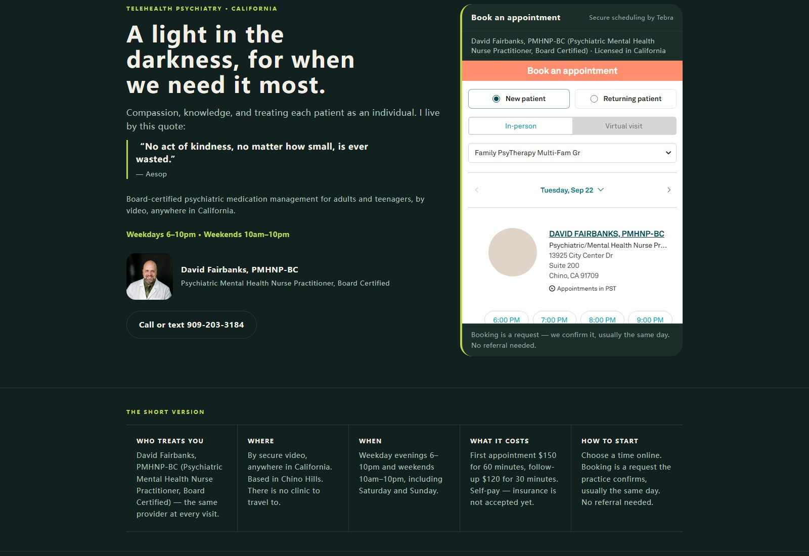
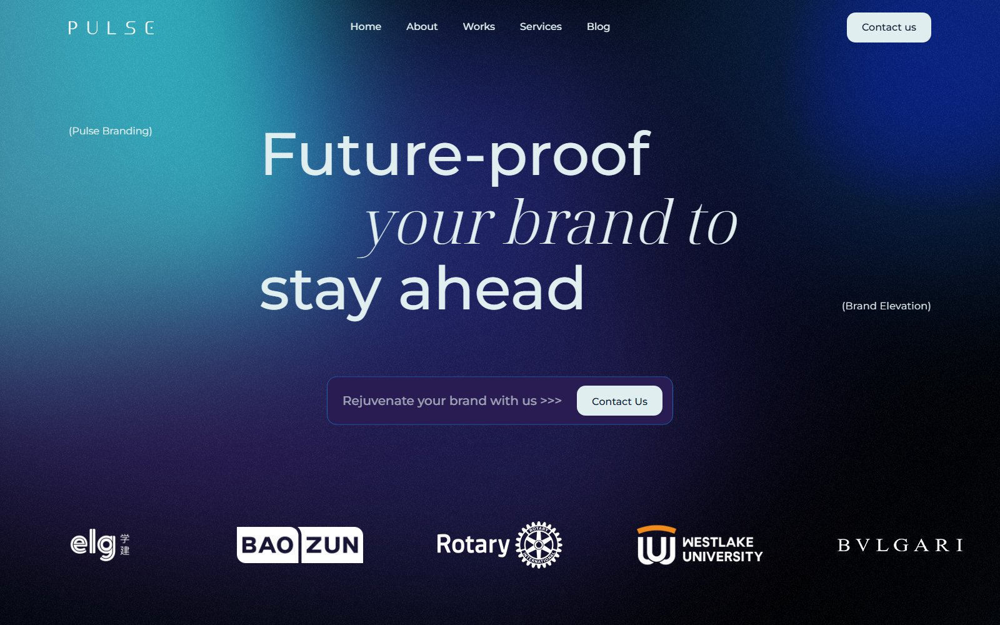
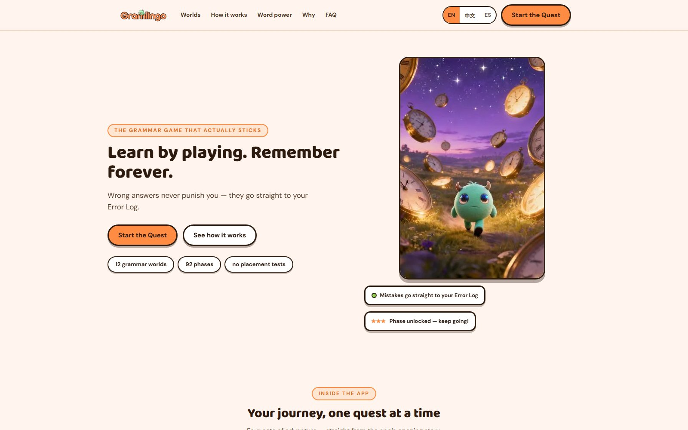
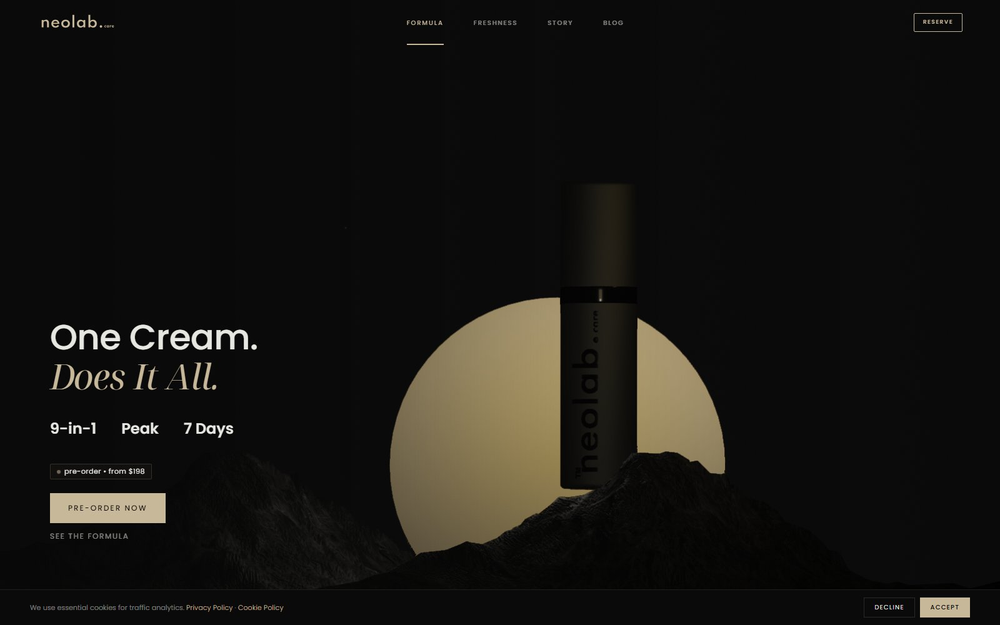
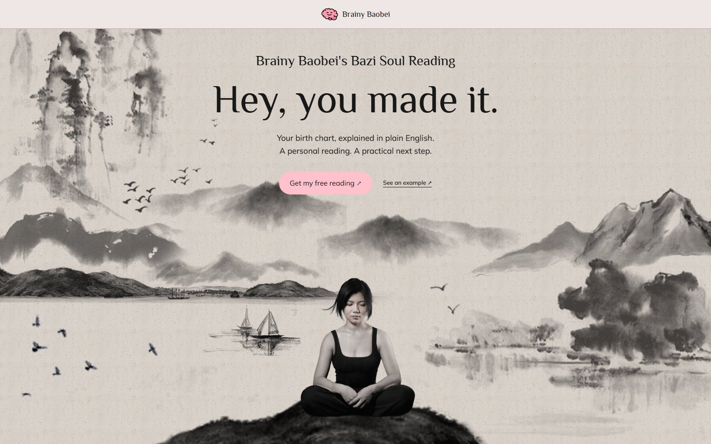
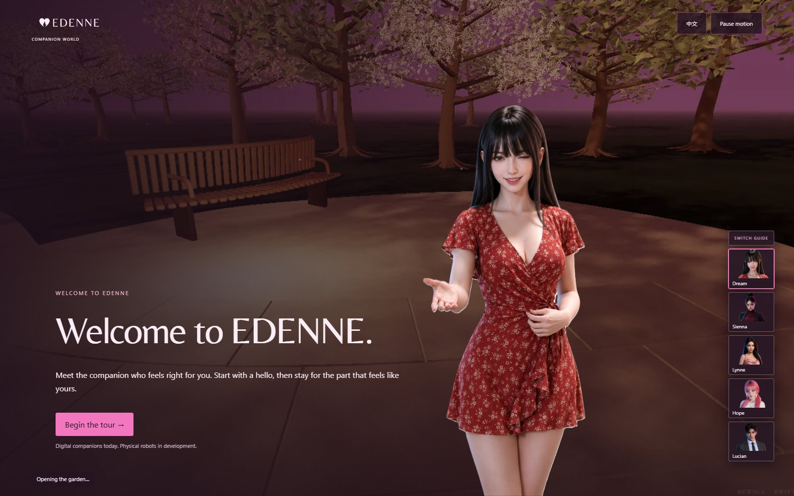
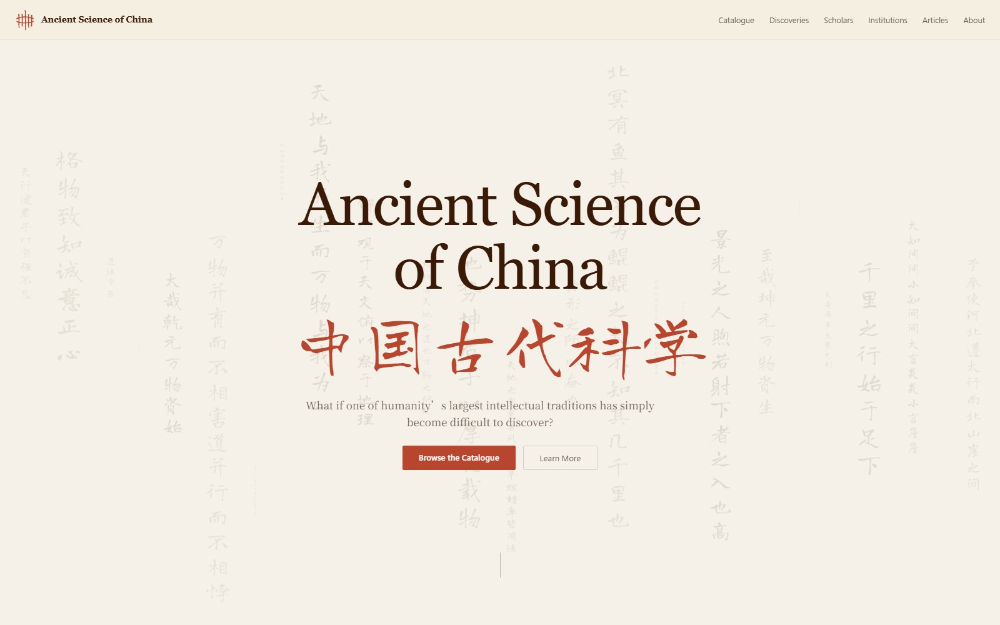
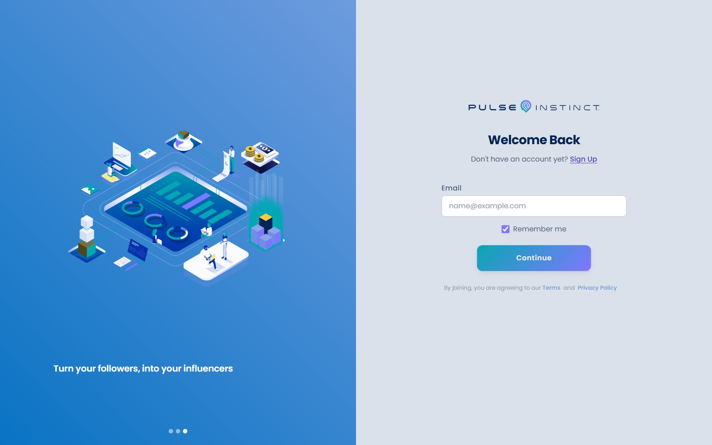
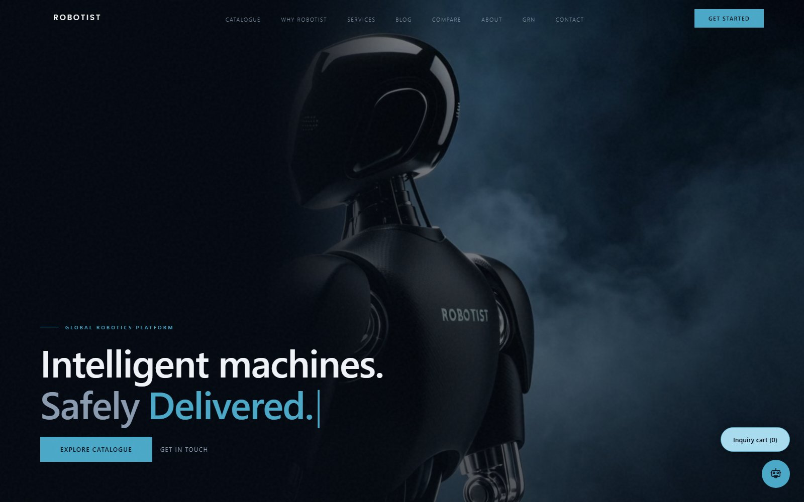
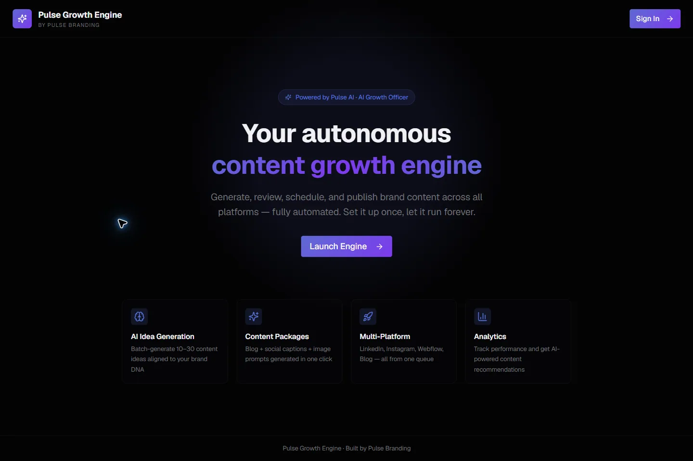

Each of these was taken from blank page to a live URL by me directing AI
agents — briefing, art direction, code review, deployment and verification.
The screenshots are the real sites.

Firefly Global
Telehealth · site + booking
A psychiatric telehealth practice's public site, rewritten and published
live: the care journey, conditions we treat, provider bio, insurance and
FAQ. The booking embed is the real widget loaded on the page, not a
stand-in.
fireflyglobal.org →

Pulse Branding
Agency · 23 pages + CMS
My agency's site and case archive. Twenty-six portfolio entries in the
CMS, and a design system built from the original shader and interface
components rather than lookalike copies.
pulse-branding.com →

GramLingo
Edtech · trilingual app
An English-learning product in English, Chinese and Spanish. 282
questions, no placement tests — the app is the test. Locked art
direction, a custom mascot, and a lessons pipeline that publishes
rendered pages automatically.
gramlingo.online →

NeoLabCare
Commerce · pre-order DTC
A pre-order skincare brand running zero inventory with seven-day
dispatch. Brand system, evidence-anchored science content, a creator
programme and a weekly outreach pipeline.
neolabcare.com →

BrainyBaobei
Product · engine + checkout
A Chinese four-pillars (BaZi) reading engine for parents, computed from
real astronomy rather than lookup tables, with its own payment flow and
a deploy pipeline that ships on push.
brainybaobei.com →

Edenne
Brand + app prototype
A presence-first brand and a phone-only companion prototype. The domain
is wired at the registrar, apex and app subdomain both TLS-verified,
each served as its own deployment.
app.edenne.life →

Ancient Science of China
Publishing · research archive
A catalogue of Chinese intellectual heritage — long-form, source-tagged
research built to be read by people and by AI answer engines alike.
ancientscienceofchina.com →

Pulse Instinct
Product · preference testing
People choose without being able to explain why — and that pattern is
what they actually want. A web app that reads subconscious preference
instead of asking people to self-report.
app2.pulseinstinct.com →

Robotist
Robotics · global platform
A robotics platform positioned globally — hardware, an on-device
assistant and a subscription layer, with Shanghai, Hangzhou and Sydney
operations and worldwide shipping.
robotist.com.au →

Pulse Growth Engine
Tooling · desktop app
An internal desktop application for content and lead generation, wired
to language and image models, built to run the agency's own growth work
rather than buy it in.